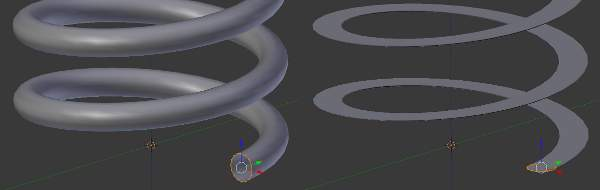
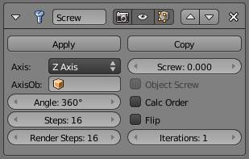

Screw Modifier¶
The Screw modifier is similar to the Screw tool in the Tool Shelf in that it takes a profile object, a Mesh or a Curve, to create a helix-like shape.

{kind=link}
Properly aligning the profile object is important.
The profile should be properly aligned to the cardinal direction of the object rather than to the screw axis.
Options¶

Screw modifier.
- Axis
The axis along which the helix will be built.
- Screw
- The height of one helix iteration.
- AxisOb
The name of an object to define the axis direction.
- Object Screw
- Use the distance from the AxisOb to define the height of one helix iteration.
- Angle
- Degrees for a single helix revolution.
- Steps
- Number of steps used for a single revolution displayed in the 3D视图. Beware of setting this higher than 渲染 Steps, which is the value used for rendering.
- 渲染 Steps
- As above, but used during render time. Increase to improve quality.
- Smooth Shading
- Output faces with smooth shading rather than flat shading. The smooth/flat shading of the input geometry is not preserved.
- Calc Order
- Order of edges is calculated to avoid problems with normals and shading. Only needed for meshes, not curves.
- Flip
- Flip normals direction.
- Iterations
- Number of revolutions.
- Stretch U/V
- Stretch the UV coordinates from (0.0 to 1.0) when UVs are present.